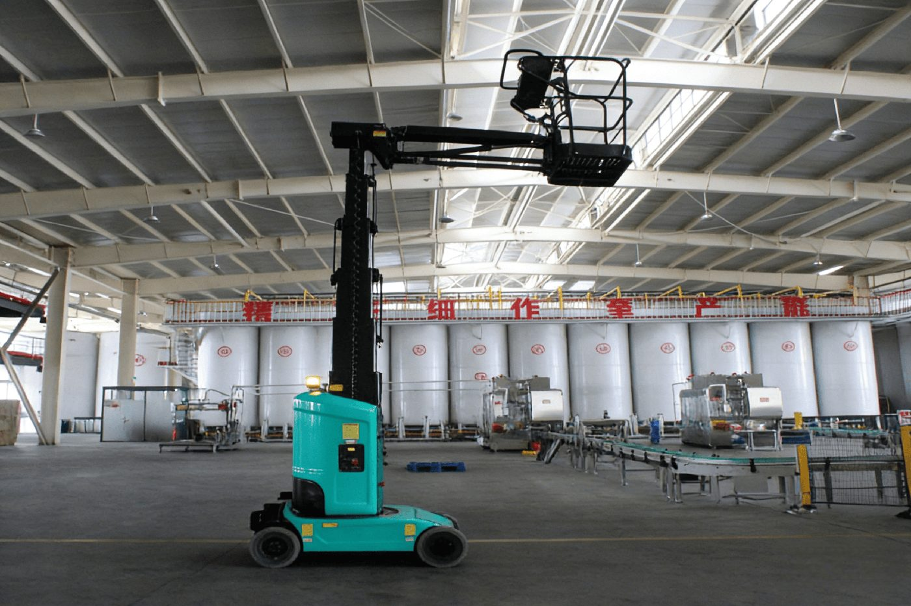
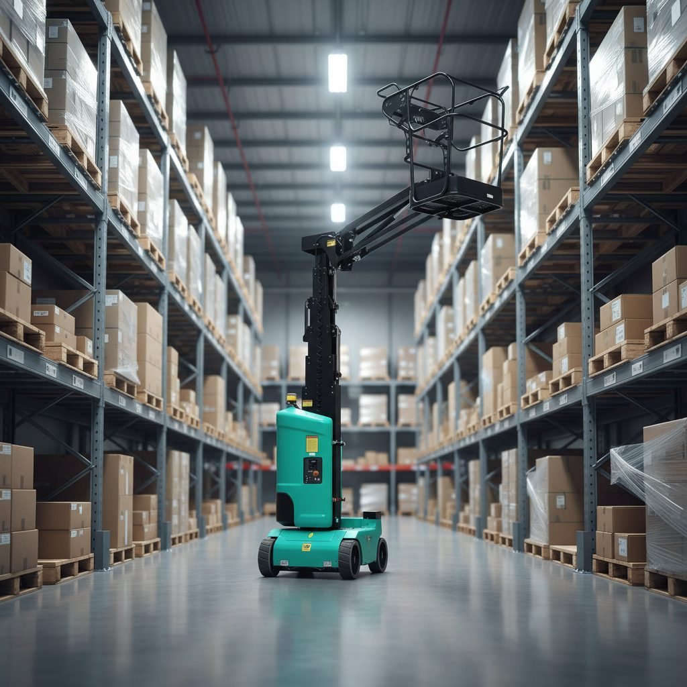

Самоходные вертикальные мачтовые подъёмники Longqing MLT 04–MLT 09
Официальный поставщик в России — ООО «ВИРА». Сертификация CE и EAC, гарантия 18 месяцев, отгрузка из Владивостока и доставка по всей России.


Вертикальные мачтовые подъёмники Longqing MLT — самые компактные машины каталога: вес от 810 кг, высота в сложенном виде от 1,7 м. Они созданы для работы в узких проходах складов, цехов и торговых центров, где ножничной платформе негде развернуться: подъём оператора идёт строго по вертикали с точным позиционированием и минимальным радиусом разворота.
Линейка MLT 04–MLT 09 закрывает рабочие высоты 5,6–11,2 м при грузоподъёмности до 227 кг; у моделей MLT 04–MLT 06 есть выдвижная секция платформы с дополнительной нагрузкой 114 кг. Электрический привод, нулевой выброс и низкая шумность позволяют вести работы внутри действующих помещений без остановки бизнес-процессов.
Модельный ряд — 4 модели
- MLT 04 — рабочая высота 5,6 м, грузоподъёмность 227 кг, вес 810 кг
- MLT 05 — рабочая высота 6,8 м, грузоподъёмность 227 кг, вес 980 кг
- MLT 06 — рабочая высота 8 м, грузоподъёмность 159 кг, вес 1160 кг
- MLT 09 — рабочая высота 11,2 м, грузоподъёмность 200 кг, вес 2950 кг
Особенности и системы безопасности
- Приводной двигатель переменного тока
- Пропорциональное управление джойстиком
- Самозакрывающаяся калитка
- Движение на полной высоте
- Бесследные шины
- Привод 4×2
- Автоматическая система торможения
- Система аварийного опускания
- Система защиты гидравлических трубок от разрыва
- Система диагностики неисправностей
- Сигнализация датчика наклона
- Звуковая сигнализация при движении
- Вращение поворотной платформы 345°
- Звуковой сигнал
- Счетчик моточасов
- Система защиты зарядки
- Проблесковый маяк
- Защита от случайных операций
- Индикатор зарядки
- Ручное освобождение тормоза
- Точка крепления страховочного троса
- Точки крепления и подъема
- Система датчиков нагрузки платформы
- Кнопка экстренной остановки
- Поворотная защитная крышка компонентов
- Освобождение тормоза
Технические характеристики
Полные заводские параметры по каждой модели серии. Цену и срок поставки уточняйте у ООО «ВИРА» — +7 (423) 256-47-21.
| Модель | MLT 04 | MLT 05 | MLT 06 | MLT 09 |
|---|---|---|---|---|
| Максимальная рабочая высота | 5,6 м | 6,8 м | 8 м | 11,2 м |
| Максимальная высота платформы | 3,6 м | 4,8 м | 6 м | 9,2 м |
| Грузоподъемность платформы | 227 кг | 227 кг | 159 кг | 200 кг |
| Грузоподъемность выдвижной платформы | 114 кг | 114 кг | 114 кг | 0 |
| Общая длина | 1,36 м | 1,36 м | 1,36 м | 2,53 м |
| Общая ширина | 0,76 м | 0,76 м | 0,81 м | 1,0 м |
| Общая высота | 1,7 м | 1,98 м | 1,98 м | 1,99 м |
| Размеры платформы | 1,28×0,70 м | 1,28×0,70 м | 1,28×0,70 м | 0,62×0,87 м |
| Длина выдвижной платформы | 0,51 м | 0,51 м | 0,51 м | — |
| Колесная база | 1,04 м | 1,04 м | 1,04 м | 1,22 м |
| Минимальный внутренний радиус поворота | 0,3 м | 0,3 м | 0,3 м | 0,23 м |
| Минимальный внешний радиус поворота | 1,4 м | 1,4 м | 1,4 м | 1,65 м |
| Скорость движения (в сложенном состоянии) | 4 км/ч | 4 км/ч | 4 км/ч | 4,5 км/ч |
| Скорость движения (в поднятом состоянии) | 1,1 км/ч | 1,1 км/ч | 1,1 км/ч | 0,5 км/ч |
| Скорость подъема/опускания | 31/32 сек | 41,5/42 сек | 52/53 сек | 42/38 сек |
| Максимальная способность преодоления подъемов | 25% | 25% | 25% | 25% |
| Приводные шины | Φ305×100 мм | Φ305×100 мм | Φ305×100 мм | Φ381×127 мм |
| Приводные двигатели | 2×24VDC/0,5 кВт | 2×24VDC/0,5 кВт | 2×24VDC/0,5 кВт | 24V/0,9 кВт |
| Подъемный двигатель | 24VDC/1,2 кВт | 24VDC/1,2 кВт | 24VDC/1,2 кВт | 24V/3 кВт |
| Аккумулятор | 2×12V/100Ah | 2×12V/100Ah | 2×12V/100Ah | 24V/240Ah |
| Зарядное устройство | 24V/15A | 24V/15A | 24V/15A | 24V/30A |
| Вес | 810 кг | 980 кг | 1160 кг | 2950 кг |
Частые вопросы о технике Longqing
Для каких объектов подходят мачтовые подъёмники MLT?
Для складов, цехов, торговых центров и узких проходов, где важны компактность и точность: вес машин 810–2950 кг, высота в сложенном виде от 1,7 до 1,99 м, привод электрический с нулевым выбросом.
Какая высота и грузоподъёмность у серии MLT?
MLT 04 — 5,6 м, MLT 05 — 6,8 м, MLT 06 — 8 м, MLT 09 — 11,2 м. Грузоподъёмность платформы: 227 кг (MLT 04/05), 159 кг (MLT 06) и 200 кг (MLT 09); у MLT 04–MLT 06 выдвижная секция выдерживает ещё 114 кг.
Чем MLT отличается от ножничной платформы?
Мачтовый подъёмник поднимает оператора строго вертикально по мачте и занимает минимум площади — это решение для одной рабочей точки. Ножничная платформа шире и поднимает больше груза, но требует места для манёвра.
Подберём модель под вашу задачу
Расскажите об объекте, высоте и условиях работ — предложим подходящую модель Longqing, рассчитаем доставку из Владивостока в ваш регион.